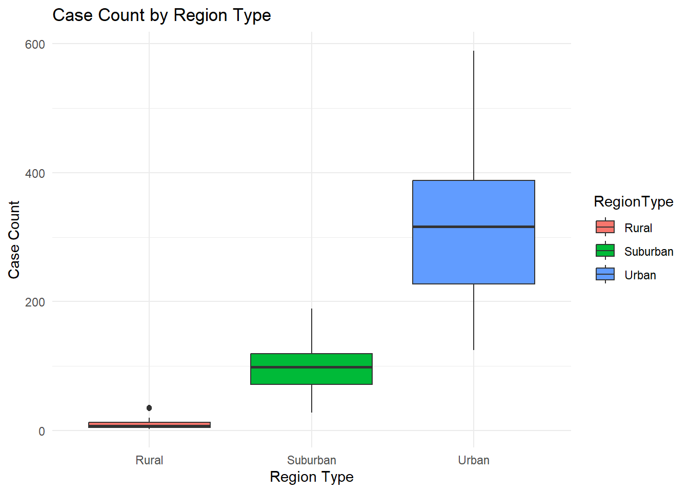
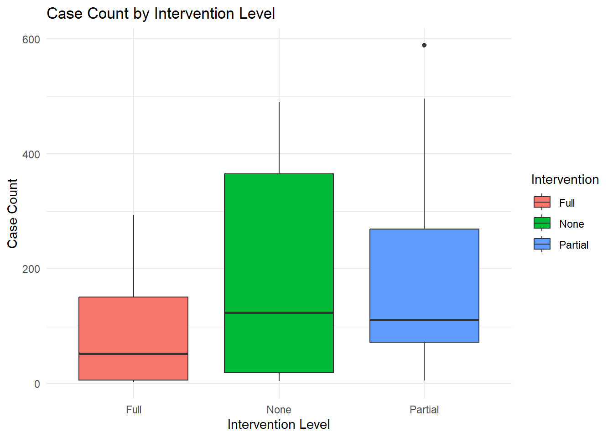
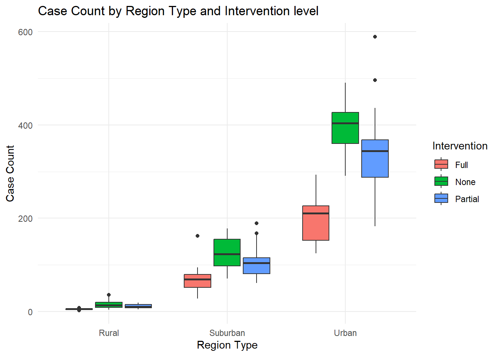
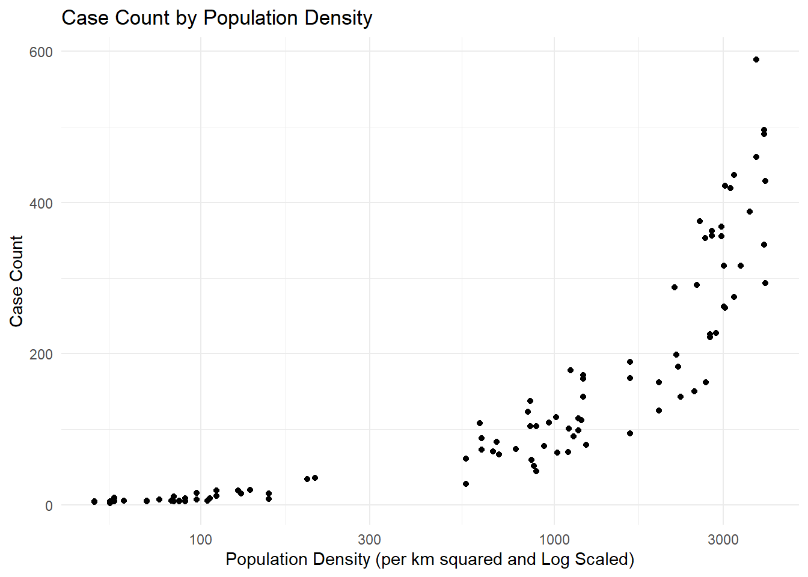

First, we will start with loading some necessary packages for data creation, visualization, and more.
# loading dslabs packagelibrary(dplyr)
Warning: package 'dplyr' was built under R version 4.3.3
Attaching package: 'dplyr'
The following objects are masked from 'package:stats':
filter, lag
The following objects are masked from 'package:base':
intersect, setdiff, setequal, union
library(purrr)library(lubridate)
Attaching package: 'lubridate'
The following objects are masked from 'package:base':
date, intersect, setdiff, union
library(ggplot2)
Warning: package 'ggplot2' was built under R version 4.3.3
library(here)
here() starts at C:/Users/vince/OneDrive/Desktop/port-MADA/vincentnguyen-MADA-portfolio
Seed Setting
Since the process is randomized, setting a seed can help improve reproduciblity when creating synthetic data.
# set a seed for reproducibilityset.seed(123)# define number of observationsn_observations <-100
Data Creation
Next, we will begin by creating the data itself. I chose to make a data set on an imaginary disease in an imaginary area. Each district has their region type (urban, suburban, or rural), case count, vaccination rate, population density, attack rate, and level of intervention (none, partial, or full) recorded. While in real life, these variables can heavily affect one , and especially the case count, for this exercise I chose to focus on a few interactions.
First, population density is heavily dependent on the region type. Next, attack rates are affected by population density and intervention level. Lastly, the case count is affected by population density, vaccination rates, and level of intervention. At the end of this block, I created bounds that try to align with what is logically expected for these values.
# create empty data frame with placeholders for variablessyn_data <-data.frame(DistrictID =numeric(n_observations),RegionType =character(n_observations),CaseCount =numeric(n_observations),VaccinationRate =numeric(n_observations),PopulationDensity =numeric(n_observations),AttackRate =numeric(n_observations),Intervention =character(n_observations))# Variable 1: District IDsyn_data$DistrictID <-1:n_observations# Variable 2: Region Type (Categorical variable)syn_data$RegionType <- purrr::map_chr(sample(c("Urban", "Rural", "Suburban"), n_observations, replace =TRUE), as.character)# Variable 4: Vaccination Ratesyn_data$VaccinationRate <-runif(n_observations, min =0.5, max =1.0)# Variable 5: Population Density (per km squared)syn_data$PopulationDensity <-with(syn_data, ifelse( RegionType =="Urban", rnorm(sum(RegionType =="Urban"), mean =3000, sd =500),ifelse(RegionType =="Suburban", rnorm(sum(RegionType =="Suburban"), mean =1000, sd =300),rnorm(sum(RegionType =="Rural"), mean =100, sd =50) )))# Variable 7: Level of Public Health Interventionsyn_data$Intervention <- purrr::map_chr(sample(c("None", "Partial", "Full"), n_observations, replace =TRUE), as.character)# Variable 6: Attack Rate (Assisted with by ChatGPT)syn_data$AttackRate <-ifelse( syn_data$RegionType =="Urban",runif(n_observations, min =0.05, max =0.2) *ifelse(syn_data$Intervention =="Full", 0.7, 1.2),runif(n_observations, min =0.01, max =0.15))# Variable 3: Case Count (Numerical Variable) Assisted with by ChatGPT (moved down here to follow coding flow)syn_data$CaseCount <-round( (200/ (syn_data$VaccinationRate *2)) * (syn_data$PopulationDensity /1000) *ifelse(syn_data$Intervention =="Full", 0.5, ifelse(syn_data$Intervention =="Partial", 0.8, 1.0)))# Ensure logical boundssyn_data$CaseCount <-pmax(syn_data$CaseCount, 0)syn_data$AttackRate <-round(pmax(pmin(syn_data$AttackRate, 1), 0.01), 2)syn_data$PopulationDensity <-pmax(syn_data$PopulationDensity, 50) # Density cannot be negativesyn_data$VaccinationRate <-round(syn_data$VaccinationRate, 2) # Round vaccination ratessyn_data$PopulationDensity <-pmax(syn_data$PopulationDensity, 10)
Data Exploration
In this section, I begin by looking at summary statistic for the data. After that, I begin exploring the data visually through various box and scatter plots.
# Summary of datasummary(syn_data)
DistrictID RegionType CaseCount VaccinationRate
Min. : 1.00 Length:100 Min. : 3.0 Min. :0.5100
1st Qu.: 25.75 Class :character 1st Qu.: 15.0 1st Qu.:0.6375
Median : 50.50 Mode :character Median :100.0 Median :0.7450
Mean : 50.50 Mean :145.1 Mean :0.7531
3rd Qu.: 75.25 3rd Qu.:226.2 3rd Qu.:0.8500
Max. :100.00 Max. :589.0 Max. :0.9900
PopulationDensity AttackRate Intervention
Min. : 50.0 Min. :0.0100 Length:100
1st Qu.: 123.0 1st Qu.:0.0600 Class :character
Median : 987.8 Median :0.0900 Mode :character
Mean :1380.6 Mean :0.0973
3rd Qu.:2599.9 3rd Qu.:0.1300
Max. :3954.6 Max. :0.2300
# Region Case Countregion_cases <-ggplot(syn_data, aes(x = RegionType, y = CaseCount, fill = RegionType)) +geom_boxplot() +theme_minimal() +labs(title ="Case Count by Region Type",x ="Region Type",y ="Case Count")print(region_cases)

# Intervention x Case Countintervention_cases <-ggplot(syn_data, aes(x = Intervention, y = CaseCount, fill = Intervention)) +geom_boxplot() +theme_minimal() +labs(title ="Case Count by Intervention Level",x ="Intervention Level",y ="Case Count")print(intervention_cases)

# Region x Intervention x Case Countregion_intervention_cases <-ggplot(syn_data, aes(x = RegionType, y = CaseCount, fill = Intervention)) +geom_boxplot() +theme_minimal() +labs(title ="Case Count by Region Type and Intervention level",x ="Region Type",y ="Case Count")print(region_intervention_cases)

# Population Density x Case Countdensity_cases <-ggplot(syn_data, aes(x = PopulationDensity, y =CaseCount)) +geom_point() +theme_minimal() +labs(title ="Case Count by Population Density",x ="Population Density (per km squared and Log Scaled)",y ="Case Count") +scale_x_log10()print(density_cases)

Model Creation
For the final part of this mini-exploration, I chose to conduct three analyses.
First, I did a linear model with the 3 variables, population density, vaccination rate, and intervention. The adjusted R-squared of 0.9313 indicates that, after accounting for the number of predictors, 93.13% of the variance in case count is explained by the variables.
Next, I looked at whether intervention levels significantly affected the case count of a district by using ANOVA. The p-value of 0.0104 indicates that there is a significant differences among intervention levels.
Lastly, principle component analysis was conducted for exploration purposes. The results indicate that PC1, Population Density, explains 65.1% of the variation seen in the case counts. PC2, vaccination rate, explains 33.12% and PC3, Intervention Level, explains 1.774%. With this in mind, models in the future can consider omitting PC3 because of its small contribution to variance.
# Creation of Linear Model with 3 variables, population density, vaccination rate, and interventionlm_model_everything <-lm(CaseCount ~ PopulationDensity + VaccinationRate + Intervention, data = syn_data)summary(lm_model_everything)
Call:
lm(formula = CaseCount ~ PopulationDensity + VaccinationRate +
Intervention, data = syn_data)
Residuals:
Min 1Q Median 3Q Max
-94.268 -20.001 -5.863 23.237 156.904
Coefficients:
Estimate Std. Error t value Pr(>|t|)
(Intercept) 5.053e+01 2.377e+01 2.126 0.036077 *
PopulationDensity 1.057e-01 3.061e-03 34.531 < 2e-16 ***
VaccinationRate -1.195e+02 2.974e+01 -4.018 0.000118 ***
InterventionNone 7.019e+01 1.003e+01 6.999 3.63e-10 ***
InterventionPartial 4.907e+01 9.107e+00 5.388 5.16e-07 ***
---
Signif. codes: 0 '***' 0.001 '**' 0.01 '*' 0.05 '.' 0.1 ' ' 1
Residual standard error: 38.43 on 95 degrees of freedom
Multiple R-squared: 0.934, Adjusted R-squared: 0.9313
F-statistic: 336.3 on 4 and 95 DF, p-value: < 2.2e-16
# Creation of ANOVA to test if intervention levels signficantly affect case countanova_model <-aov(CaseCount ~ Intervention, data = syn_data)summary(anova_model)
Df Sum Sq Mean Sq F value Pr(>F)
Intervention 2 191028 95514 4.785 0.0104 *
Residuals 97 1936247 19961
---
Signif. codes: 0 '***' 0.001 '**' 0.01 '*' 0.05 '.' 0.1 ' ' 1
# Principle Component Analysis (suggested by ChatGPT) to view which variables explain the variancepca_model <-prcomp(syn_data[, c("PopulationDensity", "VaccinationRate", "CaseCount")], center =TRUE, scale. =TRUE)summary(pca_model)
Importance of components:
PC1 PC2 PC3
Standard deviation 1.398 0.9968 0.23067
Proportion of Variance 0.651 0.3312 0.01774
Cumulative Proportion 0.651 0.9823 1.00000